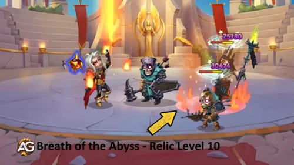
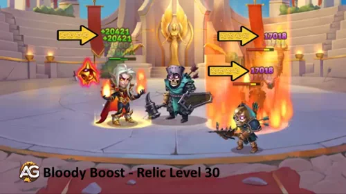

Arrogant mais indéniablement talentueux, Kai est de retour avec un rework puissant qui le rend plus redoutable que jamais. Ce mage du Chaos ne ravage pas seulement les ennemis avec des piliers de feu ardents et des bombes magiques explosives, mais se soigne également grâce à un vampirisme amélioré.
Avec sa relique en main, le nouveau Kai devient inarrêtable – une véritable force de destruction en Ligne du Milieu. Les joueurs désireux de maîtriser son potentiel le verront briller davantage aux côtés de héros comme Dorian, Galahad et K'arkh. Prêt à déchaîner le Mage du Chaos réincarné ?
Guide Kai – Hero Wars Alliance, un jeu développé par Nexters.
Qui est Kai ?
Kai est un mage du Chaos qui excelle en Ligne du Milieu, alliant des dégâts magiques élevés à une auto-régénération grâce au vampirisme. Son rework en a fait une véritable force stratégique, capable de renverser des batailles avec des sorts de zone dévastateurs et une résistance accrue.
Qui est Kai dans Hero Wars Alliance ?
Classe de Glyphe : Mage
Position : Ligne du Milieu
Stat Principale : Intelligence
Faction : Chaos
Comment obtenir des Pierres d'âme : Boutique de la Tour, Coffre Héroïque
Tier List Hydra : Soutien de dégâts de niveau intermédiaire
La plus grande force de Kai réside dans sa capacité à allier l'offensive et l'endurance. Son rework ne booste pas seulement ses dégâts magiques bruts, mais améliore également son auto-soin, lui permettant de rester plus longtemps dans le combat.
Associé à des amplificateurs de vol de vie comme Dorian, ou à des héros de première ligne comme Galahad, Kai devient une machine à dégâts implacable. Sa synergie avec K'arkh en fait également un choix de premier plan dans les équipes axées sur le burst.
Que vous progressiez dans la Tour ou que vous souhaitiez grimper dans le classement de l'Arène, maîtriser les compétences remaniées de Kai vous donnera un avantage considérable. Il n'est plus seulement un mage situationnel – il est désormais un infligeur de dégâts fiable et un joueur d'équipe dans Hero Wars Alliance.
Évaluation Globale de Kai dans le Méta
Cette évaluation rapide résume les performances de Kai dans le méta actuel de Hero Wars Alliance, basée sur la valeur de contrôle, la pression des dégâts, la synergie d'équipe et sa dépendance aux alliés.
Contrôle de Foule (CC) : ⭐⭐⭐
Puissance de Dégâts : ⭐⭐
Synergie d'Équipe : ⭐
Autonomie : ⭐⭐⭐⭐
Avantages et Inconvénients de Kai – Hero Wars Alliance
✅ Avantages
Dégâts Magiques Élevés : Puissant nuker dont les dégâts évoluent avec l'Attaque Magique et les glyphes de Pénétration Magique.
Impact de l'Ultime : Le Manteau du Voyageur inflige de puissants dégâts burst à l'équipe ennemie.
Compétence Passive de Vampirisme : 120 % de Vampirisme augmente sa survie et son endurance au combat.
Interrompt les Compétences Ennemies : Son effet de projection peut interrompre les capacités ennemies lorsque ceux-ci sont envoyés en l'air.
Bon Potentiel de Combo : Fonctionne bien avec des héros comme K'arkh pour des combos dévastateurs.
Bonne Progression : Les glyphes d'Intelligence et les artefacts améliorent son efficacité globale au fil de son évolution.
❌ Inconvénients
Fragile : Peut être éliminé rapidement s'il est ciblé, même avec des glyphes de santé.
Dépendant de l'Équipe : A besoin de la protection de ses alliés pour libérer tout son potentiel de dégâts.
Facilement Neutralisé : Les équipes avec Andvari peuvent le contrer efficacement, réduisant son impact.
N'applique Pas de Debuffs : Manque de capacités de debuff supplémentaires, limitant son utilité contre certaines équipes.
Faible Priorité de Défense Magique : Vulnérable aux mages ennemis en raison de glyphes défensifs plus faibles.
Kai — Comparaison des Stats Maximales des Talismans
Kai — Comparaison des Statistiques des Talismans
Statistique
Talisman_1 : Direction
Talisman_2 : Ambition
Intelligence
17 322
15 322
Agilité
3 726
3 726
Force
3 711
3 711
Santé
835 672
835 672
Attaque Physique
34 877
34 877
Attaque Magique
223 671
197 871
Armure
9 347,2
32 117,2
Défense Magique
53 299,8
51 299,8
Ténacité
1 860
1 860
Pénétration Magique
41 387
53 387
Écrasement
1 084
1 084
Priorité de Montée en Niveau des Compétences de Relique Légendaire de Kai – Hero Wars Alliance
Découvrez le meilleur ordre pour faire évoluer les compétences de Kai après son rework dans Hero Wars Alliance, expliqué étape par étape pour tous les joueurs.
1re Compétence – Liens du Vent (Fetters of the Wind)
Description en jeu : Lance un tourbillon qui projette toutes les cibles en l'air et inflige des dégâts. La chance d'effet est réduite si le niveau de la cible dépasse 120.
Lance un ouragan qui projette les ennemis en l'air et leur inflige des dégâts. Dégâts : 156 791 (80 % Att. mag. + 18 100).
En début de partie, l'effet de contrôle aide à interrompre les ennemis, mais sa fiabilité diminue face à des adversaires de haut niveau.
Liens du Vent, Hero Wars Alliance
Priorité d'Évolution :Moyenne – Utile pour le contrôle de foule, mais les dégâts et l'efficacité diminuent aux niveaux supérieurs.
Remarque Importante : La compétence ultime de Kai, Liens du Vent, n'a pas reçu de mise à niveau de Relique lors du rework. Contrairement à la plupart des héros, dont l'ultime est la capacité la plus décisive et la plus puissante, l'ultime de Kai n'a reçu qu'un léger buff. Au lieu de cela, les nouvelles Reliques se concentrent sur l'amélioration de ses compétences secondaires, ciblant principalement les ennemis en Ligne du Milieu. Bien que cela ajoute plus de pression offensive, cela rend Kai vulnérable à la protection contre les déplacements de héros comme Andvari, qui peut complètement annuler son contrôle de projection. Ce choix de conception rend le rework quelque peu discutable, car la compétence la plus importante de Kai reste inchangée, soulevant des doutes quant à son efficacité à long terme face aux counters puissants.
2e Compétence – Souffle de l'Abîme (Breath of the Abyss)
Description en jeu : Crée un pilier de feu au centre de l'équipe ennemie, infligeant des dégâts aux ennemis.
Crée un pilier de feu au centre de l'équipe ennemie, les consumant. Dégâts Magiques : 116 018 (60 % Att. mag. + 12 000).
Souffle de l'Abîme, Hero Wars Alliance
Priorité d'Évolution :Très Élevée – C'est la principale source de dégâts de zone de Kai. L'améliorer tôt maximise la pression en combat d'équipe.
2e Compétence – Relique Légendaire Améliorée Niveau 10 : Souffle de l'Abîme (Enhanced Legendary Relic: Breath of the Abyss)
Description en jeu : Avec le Niveau de Relique 10, un second pilier de feu est créé au même endroit que le premier, infligeant des dégâts réduits dans une zone plus petite.
Crée un second pilier de feu au même endroit. Dégâts Magiques : 58 009 (30 % Att. mag. + 6 000).
Priorité d'Évolution :Très Élevée – Doubler l'attaque transforme Kai en un mage destructeur capable d'anéantir des équipes entières.

Relique Légendaire Améliorée : Souffle de l'Abîme, Hero Wars Alliance
3e Compétence – Sphère Explosive (Explosive Sphere)
Description en jeu : Lance un orbe de feu sur l'ennemi avec la plus faible Défense Magique. Il inflige d'abord des dégâts purs pendant 3,0 secondes, puis explose, blessant les ennemis proches.
Projette un orbe de feu sur l'ennemi ayant la plus faible Défense Magique. Dégâts Magiques : 96 432 (50 % Att. mag. + 9 750). Explosion : 182 364 (Att. mag. + 9 000).
Inflige de puissants dégâts sur une cible unique et punit les ennemis regroupés.
Sphère Explosive, Hero Wars Alliance
Priorité d'Évolution :Élevée – Excellente compétence de burst, particulièrement efficace contre les héros à faible Défense Magique.
3e Compétence – Relique Légendaire Améliorée Niveau 20 : Sphère Explosive (Enhanced Legendary Relic: Explosive Sphere)
Description en jeu : Avec le Niveau de Relique 20, la Sphère Explosive applique également la Bombe Vivante à sa cible lorsqu'elle est active. Si la cible meurt pendant ou après l'orbe, tous les ennemis proches subissent des dégâts.
Ajoute l'effet Bombe Vivante à la cible. À sa mort, elle explose et inflige des dégâts à tous les ennemis.
Priorité d'Évolution :Moyenne-Élevée – La réaction en chaîne ajoutée est puissante mais situationnelle, selon le timing et la configuration ennemie.
4e Compétence – Vie Volée (Stolen Life)
Description en jeu : Compétence passive. Augmente le vampirisme de Kai à 120 %.
Compétence passive. Augmente le vampirisme jusqu'à 120 %. Permet à Kai de se soigner tout en attaquant les ennemis.
Vie Volée, Hero Wars Alliance
Priorité d'Évolution :Élevée – Maintient Kai en vie durant les batailles, lui permettant de continuer à lancer des sorts.
5e Compétence – Relique Légendaire Niveau 1 : Bombe Vivante (Legendary Relic: Living Bomb)
Description en jeu : Toutes les 15 secondes, l'effet Bombe Vivante est appliqué à un ennemi. À sa mort, il inflige des dégâts à tous les autres ennemis. Si l'effet est déjà présent sur la cible, il est appliqué au prochain ennemi à la place.
Toutes les 15 s, applique la Bombe Vivante à un ennemi. Dégâts : 317 356 (50 % de la Santé).
À leur mort, les cibles affectées explosent, infligeant des dégâts à tous les ennemis.
Priorité d'Évolution :Très Élevée – Cette relique retourne les combats en faveur de Kai en enchaînant des explosions mortelles sur le champ de bataille.
6e Compétence – Relique Légendaire Niveau 30 : Coup de Sang (Legendary Relic: Bloody Boost)
Description en jeu : Chaque fois que Kai ou l'un de ses alliés restaure des PV grâce au vampirisme, leurs statistiques principales augmentent pendant 5,0 secondes. L'effet se cumule jusqu'à 3 fois.
Chaque fois que des PV sont restaurés par le vampirisme, la statistique principale du Héros augmente pendant 5 s (cumulable jusqu'à 3 fois). Bonus de Statistique : 1 734 (1 % Att. mag.)

Relique Légendaire : Coup de Sang, Hero Wars Alliance
Priorité d'Évolution :Faible – Utile pour une mise à l'échelle supplémentaire, mais moins impactant comparé aux compétences principales explosives de Kai.
Meilleur Skin pour Kai – Hero Wars Alliance
Découvrez le meilleur ordre d'évolution des skins de Kai dans Hero Wars Alliance. Apprenez quels skins faire évoluer en premier pour maximiser sa puissance de combat et son impact dans l'équipe.
Skin de la Moisson+ (Harvest Skin+) (Attaque Magique +21 300)
C'est le skin offensif le plus puissant de Kai, augmentant massivement son Attaque Magique et maximisant l'impact de toutes ses compétences.
Priorité d'Évolution :Priorité Absolue – Le meilleur skin à faire évoluer en premier pour un potentiel de dégâts maximal.
Skin par Défaut (Default Skin) (Intelligence +1 365)
Chaque point d'Intelligence donne à Kai +3 Attaque Magique, +1 Défense Magique et +1 Attaque Physique, puisque l'Intelligence est sa statistique principale. Ce skin améliore toutes ses compétences en boostant directement son attribut fondamental.
Priorité d'Évolution :Très Élevée – Toujours indispensable car il amplifie chaque aspect du kit de Kai.
La Pénétration Magique aide Kai à contourner la Défense Magique ennemie, assurant que ses piliers de feu et ses orbes infligent des dégâts constants contre des équipes plus résistantes.
Priorité d'Évolution :Élevée – Un excellent skin secondaire pour augmenter les dégâts, surtout en PvP contre des adversaires résistants ou à haute défense magique.
Ce skin offre un boost direct d'Attaque Magique, amplifiant les dégâts directs de ses compétences, en particulier Souffle de l'Abîme et Sphère Explosive.
Priorité d'Évolution :Moyenne-Élevée – Une option solide pour augmenter les dégâts, mais moins intéressante que la Pénétration Magique lorsque les ennemis accumulent des défenses.
Skin du Champion (Champion's Skin) (Santé +106 871)
Ce skin améliore considérablement la survie de Kai. Plus de santé lui permet de bénéficier plus longtemps du vampirisme et de tenir dans les combats prolongés.
Priorité d'Évolution :Moyenne – Utile si Kai meurt trop rapidement en combat, mais pas aussi impactant que les skins axés sur les dégâts.
Skin de Plage (Beach Skin) (Défense Magique +10 650)
Ce skin réduit les dégâts entrants des mages ennemis. Il a une valeur situationnelle mais n'améliore pas directement le rôle offensif de Kai.
Priorité d'Évolution :Faible – Ne faites évoluer ce skin que si vous affrontez fréquemment des équipes riches en mages ; sinon, privilégiez les skins offensifs et d'attributs fondamentaux.
Kai avec le skin d'Été, Hero Wars Alliance.
Priorité d'Évolution des Artefacts de Kai – Hero Wars Alliance
Comprendre la priorité des artefacts de Kai dans Hero Wars Alliance est essentiel pour maximiser ses dégâts magiques et son soutien d'équipe. Ses artefacts boostent l'impact de son ultime, la pénétration magique et ses statistiques fondamentales, mais ils n'offrent pas tous la même valeur en combat. Voici l'ordre de priorité correct avec des explications.
1er – Artefact Arme : Manteau du Voyageur (Wanderer's Mantle)
Se déclenche chaque fois que Kai utilise son ultime, accordant un puissant bonus d'Attaque Magique à toute l'équipe pendant 9 secondes. Statistiques : Attaque Magique +21 360. Chance d'activation : 100 %.
Cet artefact est directement lié à sa compétence la plus puissante et profite au DPS de toute l'équipe, ce qui en fait son artefact le plus précieux.
Priorité d'Évolution :Très Élevée – Priorisez ceci en premier car il augmente la puissance offensive de Kai et de ses alliés à chaque utilisation de l'ultime.
2e – Artefact Livre : Manuscrit du Vide (Manuscript of the Void)
Augmente à la fois la Pénétration Magique et l'Attaque Magique, permettant à Kai de percer la Défense Magique ennemie. Statistiques : Pénétration Magique +10 680 ; Attaque Magique +5 340.
Cet artefact est indispensable pour que Kai reste efficace contre les tanks à haute défense et les équipes magico-résistantes.
Priorité d'Évolution :Élevée – Faites-le évoluer après l'arme, car la pénétration est cruciale pour des dégâts constants en PvP et dans les campagnes de fin de partie.
3e – Artefact Anneau : Anneau de l'Intelligence (Ring of Intelligence)
Augmente la statistique principale de Kai, l'Intelligence, qui fait évoluer passivement sa puissance magique. Statistiques : Intelligence +3 990.
Chaque point d'Intelligence donne à Kai +3 Attaque Magique, +1 Défense Magique et +1 Attaque Physique. Utile, mais avec moins d'impact immédiat en combat comparé aux deux premiers artefacts.
Priorité d'Évolution :Moyenne – Offre une bonne mise à l'échelle mais devrait être le dernier à améliorer car son impact est plus lent et individuel, pas à l'échelle de l'équipe.
Priorité d'Évolution des Glyphes de Kai
La priorité des glyphes de Kai dans Hero Wars Alliance est centrée sur la maximisation des dégâts de son ultime et de ses compétences. L'Attaque Magique et la Pénétration sont cruciales, tandis que les glyphes de survie l'aident à durer plus longtemps dans les combats. Voici l'ordre correct d'importance avec les raisons de chaque choix.
1er – Glyphe d'Attaque Magique
Augmente les dégâts bruts de Kai sur toutes les compétences, en particulier son ultime, qui est sa capacité la plus impactante. Statistiques Niveau 80 : Attaque Magique +12 850.
Priorité d'Évolution :Très Élevée – Fondamental pour le rôle de Kai en tant qu'infligeur de dégâts magiques ; devrait toujours être amélioré en premier.
2e – Glyphe de Pénétration Magique
Assure que les compétences de Kai contournent la Défense Magique ennemie, lui permettant de rester efficace contre les héros résistants et les équipes à haute résistance. Statistiques Niveau 80 : Pénétration Magique +12 850.
Priorité d'Évolution :Élevée – À améliorer juste après l'Attaque Magique pour maintenir des dégâts constants en fin de partie et en PvP.
3e – Glyphe d'Intelligence
Booste la statistique principale de Kai, faisant évoluer son Attaque Magique, sa Défense Magique et même une partie de son Attaque Physique. Statistiques Niveau 80 : Intelligence +2 110.
Priorité d'Évolution :Moyenne – Important pour la mise à l'échelle globale, mais moins urgent que les glyphes de dégâts directs.
4e – Glyphe de Santé
Augmente la survie en boostant les PV, aidant Kai à résister aux bursts et à rester en vie pour lancer son ultime. Statistiques Niveau 80 : Santé +122 800.
Priorité d'Évolution :Moyenne-Faible – Utile pour maintenir Kai en vie plus longtemps, mais pas aussi impactant que booster sa puissance offensive.
5e – Glyphe de Défense Magique
Augmente la résistance aux dégâts magiques, offrant une protection situationnelle contre les équipes riches en mages. Statistiques Niveau 80 : Défense Magique +12 850.
Priorité d'Évolution :Faible – Priorité la plus basse, car Kai bénéficie davantage de l'offensive et de la survie générale que de la résistance magique seule.
Analyse des Talismans de Kai dans Hero Wars Alliance
Le Talisman de Kai est un équipement indispensable pour augmenter ses statistiques et améliorer ses performances au combat. Avec le bon talisman, Kai peut renforcer son attaque magique et sa pénétration magique, augmentant ainsi sa puissance de dégâts contre les ennemis dans Hero Wars Alliance.
Talisman de la Direction (Premier Talisman)
Ce Talisman offre à Kai une Intelligence, une Attaque Magique et une Défense Magique accrues.
Ces bonus améliorent son rendement magique et sa résilience face aux mages ennemis.
Talisman de la Direction
Emplacement
Statistique
Points
0
Intelligence
+2 000
1
Attaque Magique
+6 600
2
Attaque Magique
+6 600
3
Attaque Magique
+6 600
Kai avec le Talisman de la Direction, Hero Wars Alliance
Le Talisman de la Direction est donc plus défensif, aidant Kai à atténuer les dégâts magiques entrants, tout en renforçant ses capacités offensives via la magie.
Talisman de l'Ambition (Deuxième Talisman)
Le second Talisman se concentre sur la Pénétration Magique et l'Armure. La Pénétration Magique permet à Kai d'infliger beaucoup plus de dégâts en contournant les défenses magiques des ennemis, rendant ce Talisman plus offensif.
Kai avec le Talisman de l'Ambition, Hero Wars Alliance
De plus, l'augmentation de l'Armure booste la survie de Kai contre les infligeurs de dégâts physiques, en faisant un meilleur choix contre les équipes qui comptent sur des attaquants physiques.
Synergie avec K'arkh
Le principal avantage du Talisman de l'Ambition réside dans sa Pénétration Magique, qui offre une synergie significative avec K'arkh, particulièrement contre les équipes incluant Andvari. Andvari est souvent utilisé pour contrer les attaques de projection de K'arkh, donc associer Kai à K'arkh aide à éliminer Andvari plus efficacement.
La pénétration magique de Kai peut percer les défenses d'Andvari, permettant à K'arkh de suivre avec ses dévastateurs attaques physiques. Cette combinaison fonctionne bien pour démanteler les équipes s'appuyant sur la protection physique, donnant à K'arkh un chemin plus facile pour dominer le champ de bataille.
Comment les Talismans de Kai Renforcent son Rôle
En résumé, bien que Kai ne devienne pas un héros de premier rang avec les nouveaux Talismans, le Talisman de l'Ambition se distingue lorsqu'il est utilisé aux côtés de K'arkh, surtout contre des équipes comprenant Andvari. La synergie entre la pénétration magique de Kai et les dégâts physiques de K'arkh en fait un duo redoutable dans certains affrontements PvP.
Kai vs Hydra
Kai n'est pas un grand héros contre les Hydres, mais sa capacité de vampirisme peut lui permettre de survivre plus longtemps face à elles.
Il est également possible de créer un combo Kai + Dorian + Orion contre les Hydres, car le bonus d'Attaque Magique de Kai combiné à la Pénétration Magique d'Orion peut infliger des dégâts considérables.
Vidéo : Kai Rework Secrets: Best Teams Revealed! | Hero Wars Alliance
Conclusion – Kai Hero Wars Alliance
Kai est un mage aux dégâts élevés dont la force réside dans sa compétence ultime, le Vampirisme et de puissants combos magiques avec des alliés comme K'arkh. S'il peut perturber les capacités ennemies et infliger des dégâts dévastateurs, sa survie et sa dépendance à l'équipe rendent le positionnement et la stratégie cruciaux. Se concentrer sur l'évolution de son Attaque Magique, de la Pénétration et des glyphes fondamentaux maximisera son efficacité, mais les joueurs doivent être conscients des counters comme les équipes Andvari. Avec un soutien adéquat et les bons artefacts, Kai peut dominer les batailles en Ligne du Milieu et être un contributeur clé à votre composition d'équipe axée sur la magie.
Suggestion Vidéo
Vidéo : Kai Rework Hero Wars Alliance – Are the new Relics worth investing in?
Avez-vous apprécié notre Guide Rework de Kai pour Hero Wars Alliance ? Y a-t-il quelque chose que vous n'avez pas compris ou souhaitez-vous suggérer des modifications ? Nous vous invitons à rejoindre notre section de commentaires sur la page du Blog Alexandre Games. N'hésitez pas à exprimer votre opinion, à clarifier vos doutes et à partager vos suggestions. Cliquez sur le bouton ci-dessous pour commencer :


 17 322
17 322 3 726
3 726 3 711
3 711 835 672
835 672 34 877
34 877 223 671
223 671 9 347,2
9 347,2 53 299,8
53 299,8 1 860
1 860 41 387
41 387 1 084
1 084


 Guide Drayne Hero Wars Alliance
Guide Drayne Hero Wars Alliance Libérer la Puissance d'Electra : Un Guide pour Dominer dans Hero Wars Alliance
Libérer la Puissance d'Electra : Un Guide pour Dominer dans Hero Wars Alliance